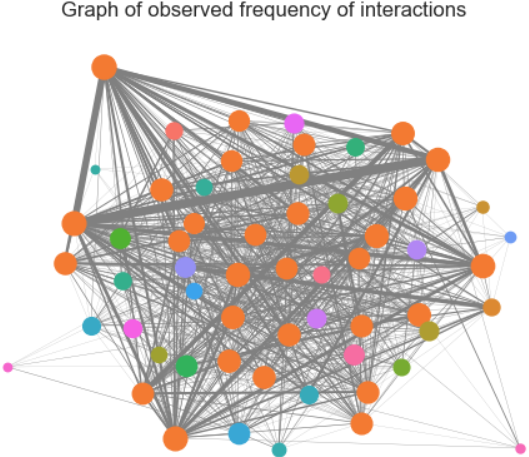

The above graph presents several features of the social network. Firstly, while the network does not have well-defined communities, it becomes more evident that a group of nodes with higher degree centrality exists as Girvan Newman method undergoes more iterations. In contrast, nodes with lower degree centrality tend to form isolated communities. Additionally, by examining the weights of the edges and the sizes of the nodes, it can be inferred that individuals with fewer connections also have less frequent interactions. Finally, the sizes of the nodes show that no small hub of highly influential individuals exist in this fraternity. Actually, the community algorithm provides the opposite result: there is a high number of well connected individuals and a small number of poorly connected ones.